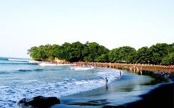
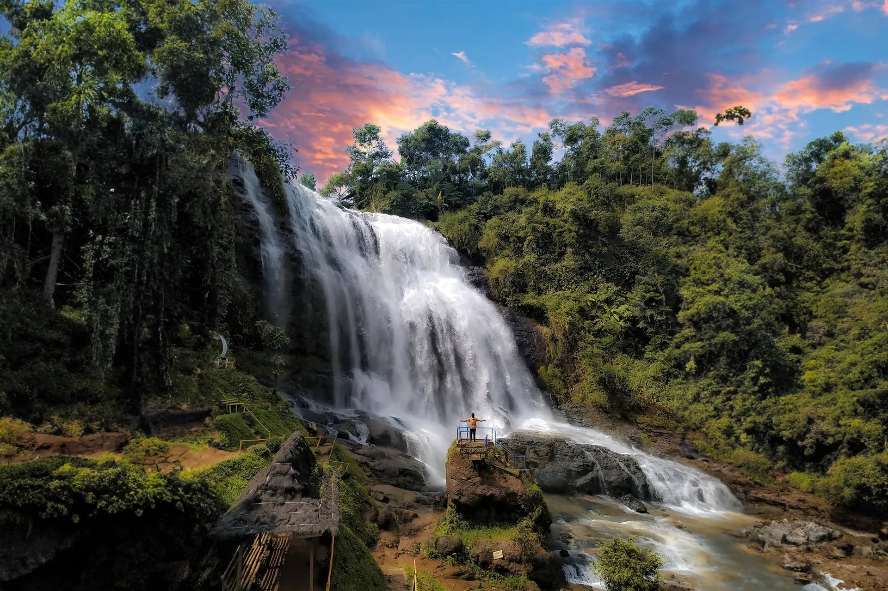
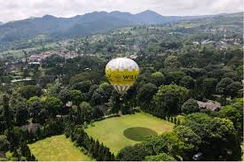
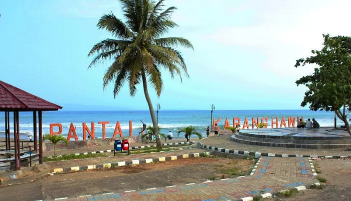
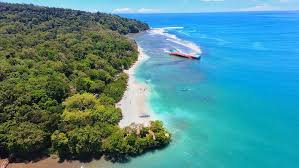
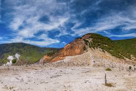
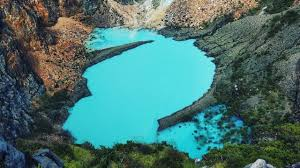
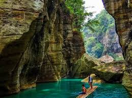

WISATA PASUNDAN
Berikut adalah beberapa rekomendasi tempat wisata yang berada di Tatar Pasundan yang wajib kalian kunjungi, yaitu :








Cukang Taneuh
Deskripsi: Sungai dengan tebing tinggi dan air yang jernih, cocok untuk berperahu dan menikmati alam.
Lokasi: Cukang Taneuh, Pangandaran.
Harga Masuk:Rp100.000 - Rp200.000 (termasuk perahu).